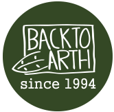
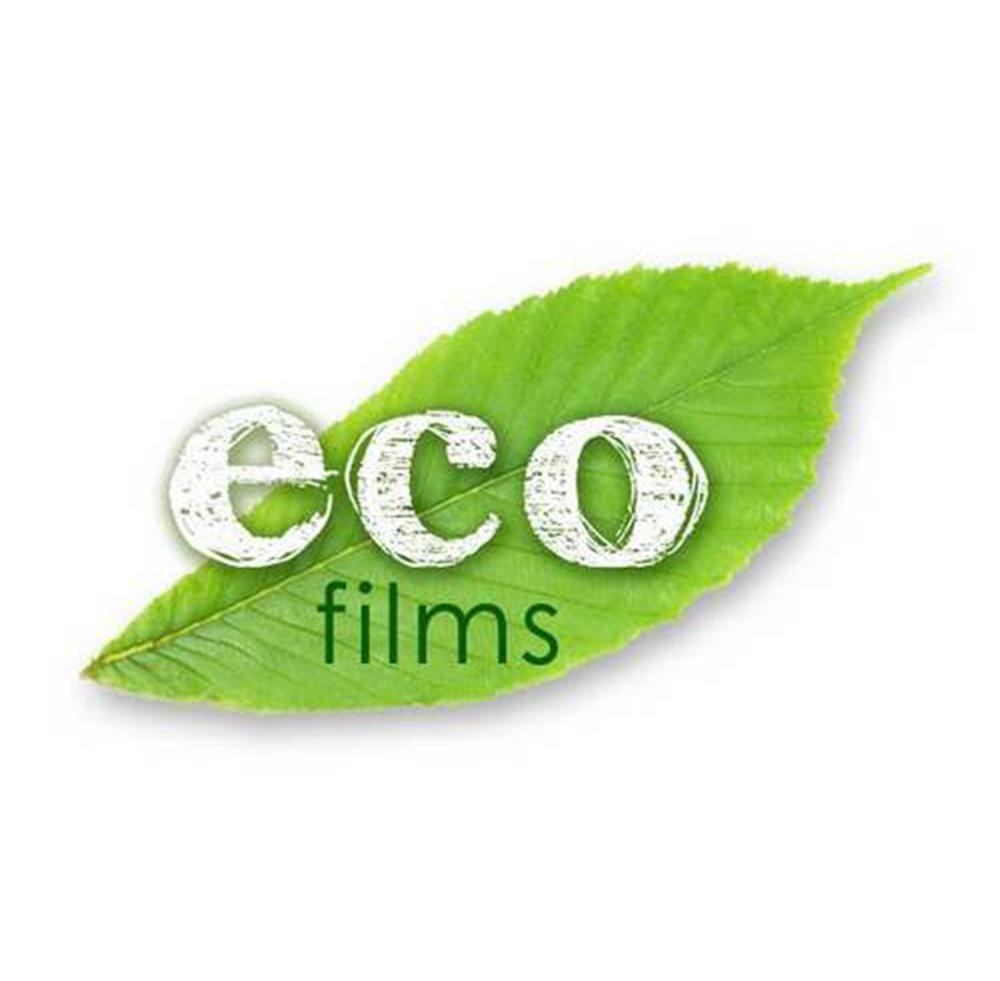

Hayleys PLC, Sri Lanka, a multiple awarded winning blue-chip conglomerate which commenced its
commercial
operations in 1878 as Chas P. Hayley & Company currently encompasses 12 defined sectors of the
enterprise.
Being the first business subsidiary of Hayleys PLC, Hayleys fibre restructured to operate under
Hayleys Eco
solutions with the diversifications to meet varied requirements. As a world-renowned manufacturer
and
exporter of eco-friendly coir based fibre products, their legacy continues on and today they are
exporting
over 400 customized coir based fibre products around the world.
Eco solutions represent the coir fibre products sector of Hayleys which in turn is denoted by 3
sub-sectors.
Hayleys Fibre is responsible for manufacturing coir based Horticulture, Growing Media, Erosion
Control,
Bedding products & Mattresses.Floor coverings manufacture, floor/doormats while brushes and broom
are
manufactured by the brush-ware sub-sector.

Back to Earth is a family owned enterprise having begun as a small home-based workshop back in 1997,
in the
beautiful tropical island of Sri Lanka. Their philosophy is to produce eco-friendly products that
have the
minimum impact on the environment. They therefore keep exploring new ways of making use of natural
discards,
up-cycled wood and recycled handmade paper.
They have a skilled team working on the production of our wide range of handmade paper items while
they also
work with rural craftspersons who create the unique handmade wooden product range. They are proud to
work
with this extended family who are dedicated to making each individual product special and
functional.

Eco Films (Pvt) Ltd is a flexible packaging manufacturer based in Jaela, Sri Lanka , specialized in
manufacturing of comprehensive portfolio of printed and unprinted flexing packaging materials
supplying a
wide range of customers across all key market sectors in domestic and export. State of the art
manufacturing
facility is located in Jaela, Sri Lanka 17 km south of Bandaranayke International Airport and 22km
North of
Colombo Harbor. Present installed Capacity is 180 tons per month and has a workforce of 50.
Their key success factors include ethical business practices, transparency and their constant
endeavor to
provide satisfactory customer service.Eco Film is a subsidiary of Polytrad Industries and Polytrad
is a
member of the Oxo-biodegradable plastic Association of United Kingdom (OPA). In Sri Lanka they are
the sole
distributor of Symphony Environmental products such as d2w, d2p and d2t from United Kingdom,
Exclusive
agents for Torise Bio- Materials, a world leading compostable Resin manufacturer in China and Agents
for
NHAT
HUY Group for Calcium Carbonate Powder and Calcium Carbonate fillers.